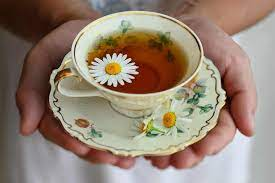
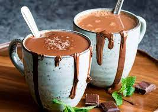

Você que aprender como se faz o melhor bolinho de chuva do mundo?
Aquele que dá água na boca só de olhar?
Então venha com a gente fazer essa receita magnífica!
Agora é só passar um cafezinho...
Clique na imagem para receita!
Ou um chazinho...

Clique na imagem para receita!
Ou até mesmo um chocolate quente... hummm que tal?!

Clique na imagem para receita!